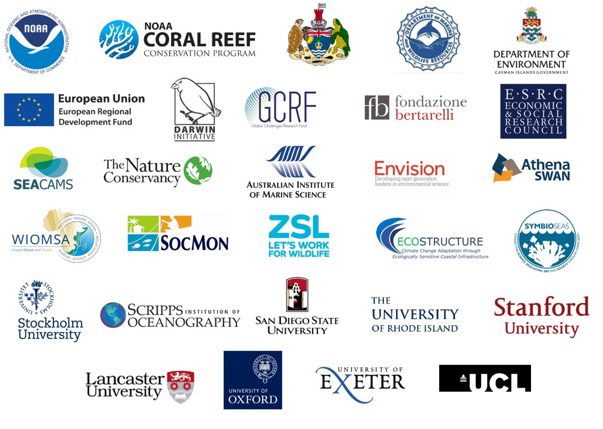

Reef systems research group
Based at Bangor University, we study the drivers of variation in reef ecosystem state, to advance our understanding of these complex systems and inform their sustainability

Based at Bangor University, we study the drivers of variation in reef ecosystem state, to advance our understanding of these complex systems and inform their sustainability
#Coral #reefs are changing so rapidly as a result of our #climate #crisis we need to rethink how we study, define and manage them. Requires we revisit and test the validity of historical coral reef paradigms @FunEcology @naj_graham https://t.co/ZGhXsKAkC6https://t.co/ro2ccSgNzf pic.twitter.com/xjJp30OMpg
— Gareth J Williams (@RemoteReefs) June 19, 2019
